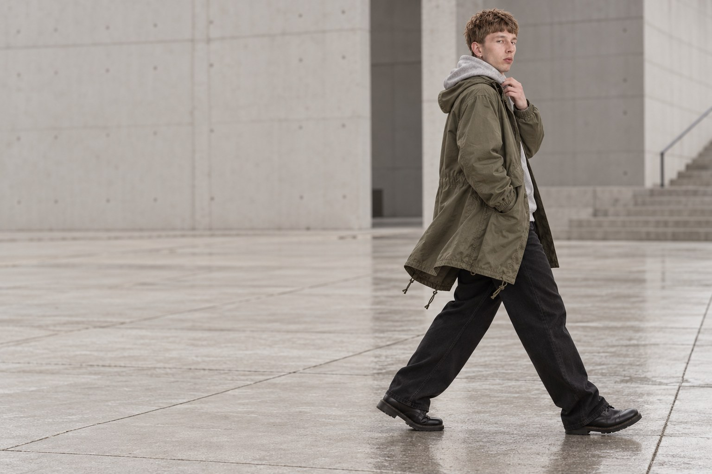
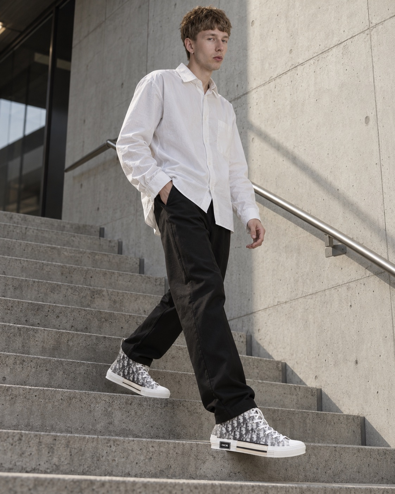
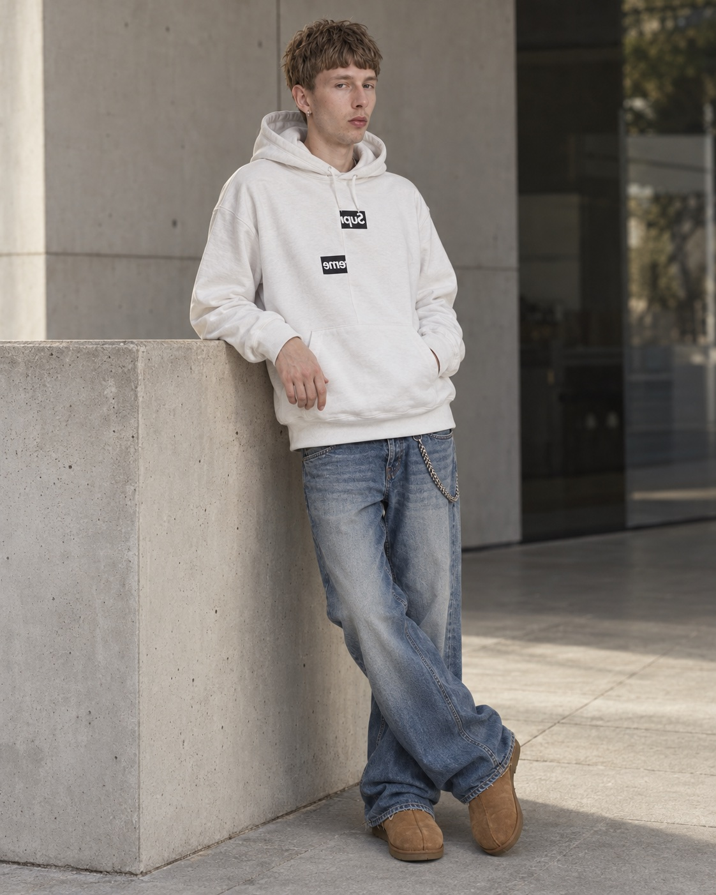
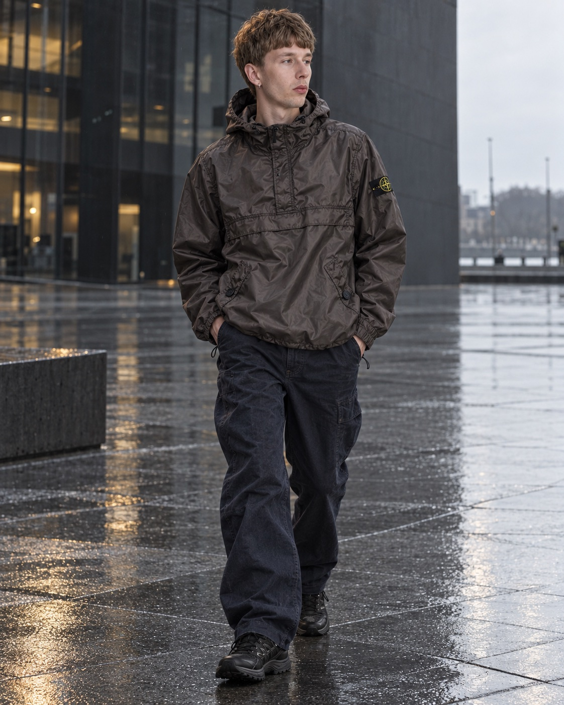

MIESZKO I — BIRTHDAY CAMPAIGN / 2026MIESZKO
01 / 06
MIESZKO
IN MOTION.
Wyjątkowe rzeczy. Jeden bohater.
Odkryj kolekcjęTHE EDIT / 2026
Oglądaj po swojemu.
Jeden dzień.
Cała scena.
Oglądaj po swojemu.

THE SILHOUETTEKażdy kadr
Każdy kadr
mówi inaczej.
Od wyrazistego koloru po spokojny gest. Ubrania zmieniają ton, Mieszko pozostaje sobą.
Zobacz wszystkie stylizacje
INTERLUDE / THE PAUSE
W ruchu.
W swoim tempie.


MIESZKO I / ARCHIVETo dopiero
To dopiero
początek.
Odkryj całą kolekcję i wybierz własną stylizację.
Przejdź do kataloguArchive
23 wybrane wydania streetwearu. 1985 — 2026.
ARCHIVE / 23 WYBRANE SYLWETKI